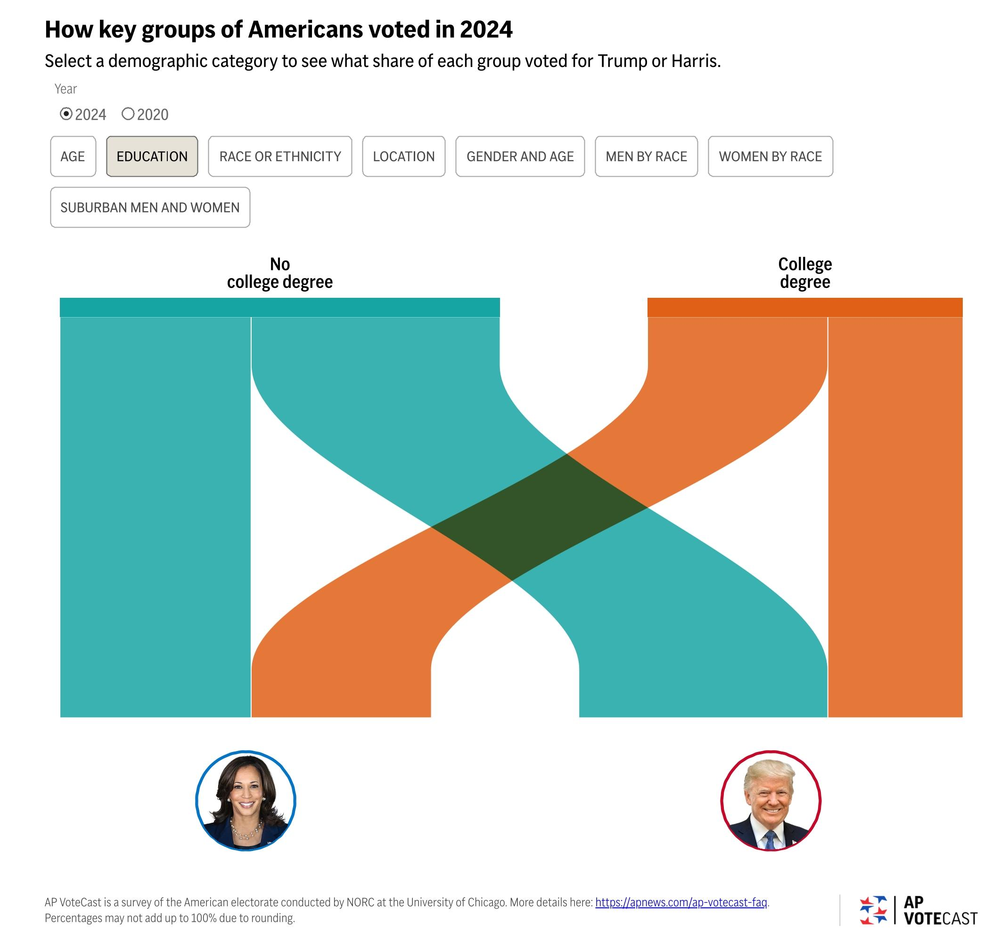

How Did Different Groups Vote in the 2024 US Election?
The 2024 US Election revealed distinct voting patterns across various demographic segments. This page explores the distribution of votes among different segments of the population, helping us understand how each group contributed to the election outcome.
Explore Which People Voted For Who
Click on the buttons to see how many people voted for Kamala Harris or Donald Trump
